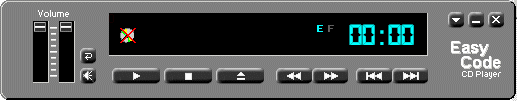
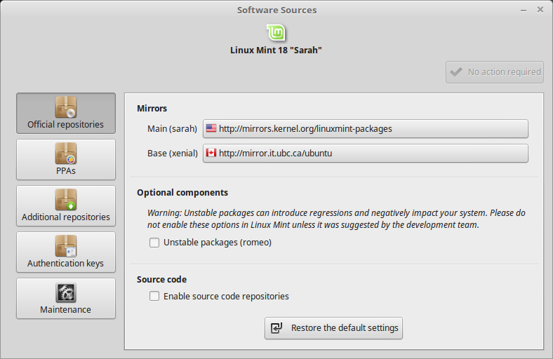
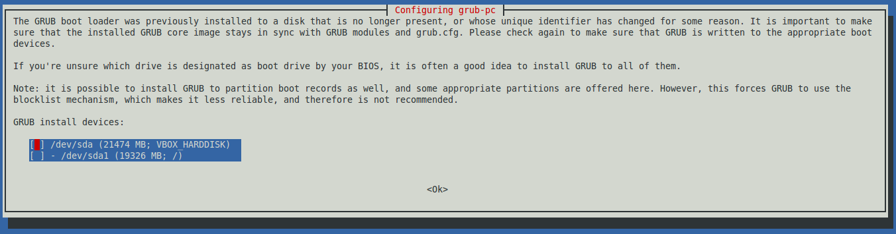
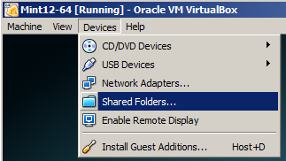
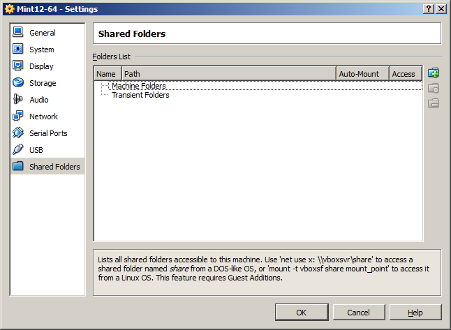
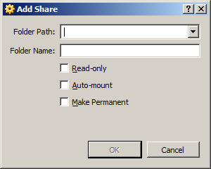
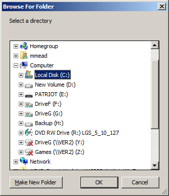
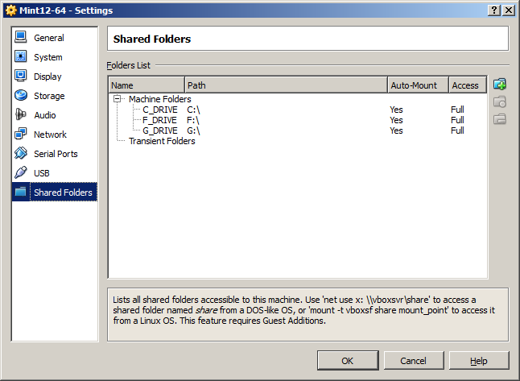
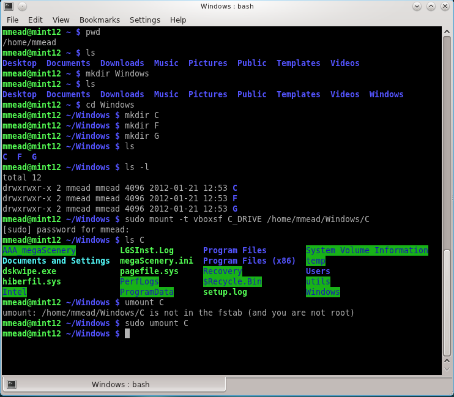
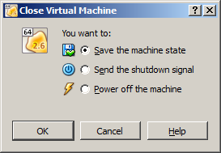

Operating System Concepts - 8th Edition Silberschatz, Galvin, Gagne ©2009 (a) Non-virtual machine, (b) Virtual machine.
|
|
Introduction
What is virtualizationvirtualization?

Background
Operating System Concepts - 8th Edition Silberschatz, Galvin, Gagne ©2009 (a) Non-virtual machine, (b) Virtual machine.
Case Study: VirtualBox
The first thing is to download the software from the Virtual Box website. You have to choose the software that matches the operating system where you are going to install it (e.g. Windows, Linux, Mac OS X).
Since all of the computers at Digipen (and most student computers) run Windows, we will download the Windows version of VirtualBox. If you have a Mac, you should download the version for that. And if you're already running Linux, but not Mint, you can download the version of VirtualBox for Linux, and run Mint in that virtual machine.
The next thing is to choose what operating system you want to virtualize (i.e. run alongside of your host operating system). Linux is a great choice because there are over 100 distributions and they are all free. Plus, since we're studying operating systems, Linux is by far the best choice for that. If you have a copy of Windows (most any recent version), you can also virtualize that. However, I suspect most students are already running Windows, and it's a Unix-like operating system (Linux, Mac OS X) that they lack. So, we will create a Linux virtual machine running inside a Windows host machine.
I am going to choose Linux Mint. The choice of a particular Linux distribution can be somewhat personal. As stated, there are over 100 different distributions and they all target a different audience. If Linux Mint isn't to your liking (for whatever reason, and there could be many), you simply choose another one. However, until you've worked in a Linux environment, you won't really know what the differences are. The good thing is that Linux is free, so you can try every one of them until you find one you like! Compare this to proprietary operating systems where you may not have much of a choice. You take it or leave it. Anyway, I'm not going to get into the almost-religious debate about which operating system or distribution is better. That's for another time. Oh, and in case you're wondering why I chose Mint, I'm not the only one that thinks it is a great distribution.
Popular Linux distributions include:
Another reason for getting familiar with a Unix-like operating system is because it has influenced so many operating systems. It's important to be familiar with the concepts behind the most widely-used (and/or imitated) operating system. In addition to UnixUnix itself, other Unix-likeUnix-like operating systems include: So, in a nutshell, Linux and Unix-like operating systems are the most widely used operating systems on the planet and they're getting more popular every day.
- LinuxLinux - This is the obvious one. Probably used in more devices than everything else combined. If you're new to Linux, you should check out this short video to see just how popular Linux is. Most supercomputers run Linux.
- macOSMacOS X (formerly OS X, formerly Mac OS X) - From Apple for Macintosh desktop computers.
- iOSiOS - From Apple and runs on the iPod, iPad, and iPhone. All very popular devices.
- AndroidAndroid - From Google, based on the Linux kernel. It is the most widely-used cellphone OS. Plus, it is run on countless devices like TVs, DVRs, routers, and small form-factor computers like the Raspberry PiRaspberry Pi.
Installing VirtualBox
Creating the Virtual Machine
Virtual box comes with a guided "wizard" that makes virtual machine creation very simple.
Note: The distribution to use is Linux Mint 64-bit. The 64-bit version will help you understand the differences (problems) when porting 32-bit programs to 64-bit. Most of the software that you will likely run for the forseeable future is going to be 64-bit. It is time to start learning how to deal with that.
I've put together a very detailed step-by-step of creating a virtual machine and installing Linux Mint, complete with dozens of screenshots. You can find it here.
These are the first steps you should perform after you've install Linux into a virtual machine. By the way, installing, upgrading, and removing software (packages) is done with a command-line program called apt-get. You need to be the administrator (root) to use it. Some information about it can be found here.
Note that this step may no longer be required with the recent versions of Linux Mint. Some versions seem to have these additional capabilities already installed. Installing them from the Virtual Box Manager may actually cause problems if they are different versions.
Update: I'm not sure why, but it seems that Windows 10 requires these Guest Additions to be installed. Without them, I find that there are no shared folders and that you can't copy/paste between operating systems.
You will be prompted for your password. A window will be displayed that will allow you to tell Linux Mint which servers to use to download from:mintsources

By choosing servers that are physically closer to you, the downloads will be significantly faster. From the Seattle area, the best choices for Linux Mint 18 (at the time of this writing) are http://mirrors.kernel.org/linuxmint-packages for the Main repositories and http://mirror.it.ubc.ca/ubuntu for the Base repositories.
When you click on the buttons, all of the repositories will be tested for their bandwidth speed. You should select the fastest one. If you are in an area other than Seattle, you may want to choose a different mirror that is closer to you.
This will update the repository information which is used to keep track of which versions of the software packages are currently installed and what is the latest version in the repositories.sudo apt-get update
This will make sure that you are running the latest version of all of the software that is installed on the system. It will download and install the software. If you just want to download the software (and install later), use the -d switchsudo apt-get upgrade
Now when you want to do the actual install, invoke it without the -d switch and it will install the updates. Depending on how out-of-date your system is (i.e. how often you update things), you may end up downloading and installing hundreds of megabytes of updates.sudo apt-get -d upgrade
If during the upgrade you see something like this:

Select the first option (press the spacebar), then press TAB to move to the <Ok> and press Enter. This message is something that I've only occasionally seen.
It will download a lot of software and take up an additional 1 GB of drive space. The choice between the GNOME desktop the Cinnamon desktop, and the KDE desktop (among others) is one of personal preference. I've always preferred KDE because it is more configurable and powerful. Students new to computers (either Windows or Linux) sometimes feel overwhelmed by the amount of options KDE provides. There will be things I demonstrate that will be much easier for you to do, if you have KDE installed. Even if you don't want to use the KDE desktop, you might still want to install this because it provides much more than just the desktop environment. It will install many graphical programs that you might want to explore.sudo apt-get install kde-full
If you downloaded the Cinnamon version, you may want to install some other things before using it. In addition to the update and upgrade steps above (which should be done with any new installation), you might also want to add these packages to give you a much better Linux desktop experience:
Command (single line) Description sudo apt-get install mint-meta-codecs Add codecs (for playing music and watching videos). Adds about 200 MBs of files. If you got the full Cinnamon version, you will already have these. If you got the smaller download without the codecs, then this will install them. sudo apt-get install mint-meta-mate Installs the MATE desktop. A popular desktop among the GNOME community. Adds about 500 MBs of files. MATE on wikipedia. sudo apt-get install mint-meta-gnome-dvd Installs all of GNOME from the DVD version. Adds about 1 GB of files. GNOME on wikipedia. This is no longer available with versions later than 17.x. sudo apt-get install kde-full Installs everything from the KDE version (and then some). Adds about 1.2 GBs of files. KDE on wikipedia. This is no longer available with versions later than 17.x. If you'd still like to run Konqueror, install these files: konqueror dolphin4 konsole konsole4-kpart kfind sudo apt-get install mint-meta-xfce Installs the Xfce desktop environment. This is a more lightweight desktop interface that doesn't consume as many resources (i.e. uses less CPU and memory). Xfce on wikipedia.
Installing Software
This section now has it's own detailed page here.Sharing Folders
Once you get the guest OS installed, one of the things that many people want to do is to be able to access files on the host from the guest, e.g. access their Windows files from Linux.Having the guest OS access the files on the host OS is a very powerful and convenient capability. It's not hard to do, but, if you don't know how to do it, it may seem a little confusing at first. These notes should give you enough information to setup shared folders in your virtual machine.
We would like the host and guest operating systems to be able to share files. We can do this by using Shared Folders. In the running virtual machine, choose the Devices menu, then choose Shared Folders:Note: In these examples, the host operating system is Windows 7 Professional 64-bit and the guest is Linux Mint 12 64-bit. The Virtual Box software looks very similar on all platforms, but you may detect some differences from the screen shots below.
This presents the Shared Folders dialog box:
You add a shared folder by clicking on the folder icon (with the '+' sign) or pressing the insert key. This presents the Add Share dialog box:
If you know the path of the folder on the host OS that you want to access from the guest OS, you can type it in or browse for it:
I've selected to share the entire C: drive in Windows. When you click OK, you have a chance to name the share. By default, it is named C_DRIVE which is adequate for our purposes. I also check Auto-mount and Make Permanent for ease-of-use, as I want this to happen automatically each time the guest OS is booted.
Clicking OK returns us to this screen where we can see that we've successfully set up a share:
I also added my F: and G: drives as well, giving me this as a result:
You could have more control over which folder or folders to share, but when I set up my VM's, I tend to share everything because I never know what I'm going to want to access on the host OS. For more safety, you could just share specific folders, but I tend to be lazy with non-critical systems.
By default, when you boot into your Linux guest, you will see these shared folders mounted in /media as:
You will not be able to access the folders, though, because you do not have the proper permission to do that. If you look at the permissions of the shared folders, e.g:/media/sf_C_DRIVE /media/sf_F_DRIVE /media/sf_G_DRIVE
You will see this:ls -l /media
The folders are owned by root and the group is vboxsf. Since, by default, no one is in the vboxsf group, you need to add yourself (username) to the group. To see what groups you are a member of, just use the groups command and you will see something like this displayed:drwxrwx--- 1 root vboxsf 0 2012-05-11 12:17 sf_C_DRIVE drwxrwx--- 1 root vboxsf 0 2012-05-11 12:17 sf_F_DRIVE drwxrwx--- 1 root vboxsf 0 2012-05-11 12:17 sf_G_DRIVE
There is no vboxsf group listed. You can easily add a user to any group with the usermod command. My username is mmead in this virtual machine, so I would do this at the command prompt:mmead adm dialout cdrom plugdev lpadmin admin sambashare
You have to log out and then log back in (just like a "regular" computer) for the new group to take affect. (If you do this: su - $USER, the new group will only be in effect temporarily until you log out and log in again.)sudo usermod -a -G vboxsf mmead
Now when I type groups at the command prompt, I see this:
Note that you must be administrator (root in Linux) to perform this task. The sudosudo command gives you root access temporarily and will prompt you for your password.mmead adm dialout cdrom plugdev lpadmin admin vboxsf sambashare
Mounting shares in a specific folder (Optional)
For most users, using the default mount locations and mount names is fine. But, if you want more control over the shared folder process, you can mount the folders the "Linux way". In the following example, I'm going to mount the shared folders in my home directory on Linux, essentially preventing any other users from accessing these folders.In the Linux guest operating system, we need to mountmount these shares using the mountmount command. In this example, I will show the steps involved.
In my home directory (/home/mmead) I created a directory called Windows and within that directory, I create 3 directories: C, F, and G. These names correspond to the 3 drives that I've shared from Windows. Sometimes, having single-letter names for directories can lead to confusion, but in this case, it makes sense since Windows wants to name partitions with a single-letter. Using the same name for the directory as the drive letter, it is clear what is what. Within my home directory, I run these commands:
Now I am ready to mount (map) the shares in Windows (e.g. C_DRIVE) to a directory in Linux (e.g. /home/mmead/Windows/C). Note that this isn't required in a Windows guest.mkdirmkdir Windows cdcd Windows mkdir C mkdir F mkdir G
If you enter this correctly, you will be prompted for your user password. Type your password and the command will execute. The command is a little cryptic, so let me give you a brief explanation. This is the basic syntax:sudo mount -t vboxsf C_DRIVE /home/mmead/Windows/C
wheremount -t [filesystem type] [share name] [mount point]
We will need to do this for each share:
sudo mount -t vboxsf C_DRIVE /home/mmead/Windows/C sudo mount -t vboxsf F_DRIVE /home/mmead/Windows/F sudo mount -t vboxsf G_DRIVE /home/mmead/Windows/G
See the man pages (e.g. man mkdir) for detailed information.
Now, every time the guest OS boots, the Windows shares will be mounted. The screen shot below shows the actual fstab file on the guest OS:C_DRIVE /home/mmead/Windows/C vboxsf defaults 0 0 F_DRIVE /home/mmead/Windows/F vboxsf defaults 0 0 G_DRIVE /home/mmead/Windows/G vboxsf defaults 0 0
See the man pages for fstab for explanations.


{kind=link}